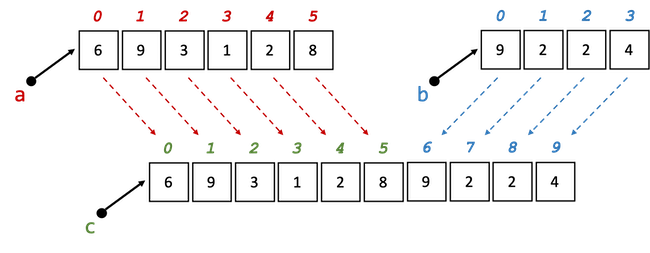

Arrays¶
In einer Variable können wir genau einen Wert speichern. Wenn wir 5 Werte speichern wollen, benötigen wir 5 Variablen und wenn wir 1000 Werte speichern wollen, benötigen wir 1000 Variablen. Das ist natürlich unzweckmäßig. Wenn Sie mehrere Werte gleichen Typs speichern wollen, dann verwenden Sie dazu besser Arrays (Felder). Arrays sind Objekte.
Wir schauen uns mal ein einführendes Beispiel an. Angenommen, wir wollen 5 int-Werte 0, 1, 4, 9 und 16 speichern. Bis jetzt benötigten wir dazu 5 Variablen:
int number1 = 0;
int number2 = 1;
int number3 = 4;
int number4 = 9;
int number5 = 16;
Jetzt wollen wir dazu ein Array verwenden. Die Erzeugung und Initialisierung sieht so aus:
1 2 3 4 5 6 | |
- Ein Array erkennen wir an den eckigen Klammern
[]. - Unser Array im Beispiel ist vom Typ
int, d.h. jedes Element in diesem Array ist vom Typint. Arrays können von einem beliebigen Typ sein, sowohl Wertetypen als auch Referenztypen. Ein Array wird immer für genau einen Typ deklariert, bei unsint→ deshalbint[]. Bestünde das Array aus lauter Strings, dann wäre der TypString[]. - In unserem Beispiel ist
numbersdie Referenzvariable, die auf unser Array-Objekt zeigt. - Mithilfe des Schlüsselwortes
newwird unser Array erzeugt. Nachnewkommt nochmal das Array (Typ[]), aber in den eckigen Klammern steht die Länge des Arrays. In unserem Beispiel5. Bei der Erzeugung des Arrays muss immer die Länge angegeben werden. Die Länge eines Arrays kann sich nicht ändern. - Der Zugriff auf die einzelnen Elemente erfolgt über den Index. Jedes Array ist automatisch "nummeriert". Die "Nummerierung" (der Index) beginnt immer mit
0und erhöht sich für jedes Element um1. Der Index eines Arrays ist immer vom Typint.
Wir können uns unser Array numbers so vorstellen:

Wir haben 5 Elemente (Länge 5), die jeweils durch den Index nummeriert sind. Diese Elemente können nun Werte enthalten:

Der Zugriff auf die Werte eines Arrays erfolgt dann immer unter Verwendung der Referenzvariable, dahinter eckige Klammern und in den Klammern der entsprechende Index:
Referenzvariable[Index]=Wert;
Also in unserem Beispiel numbers[0].
Erzeugung und Initialisierung eines Arrays¶
Die Erzeugung und Initialisierung eines Arrays erfolgt in drei Schritten:
- Schritt: Definition einer Referenzvariablen, die auf das Array-Objekt zeigt (siehe oben in Zeile
1:int[] numbers) - Schritt: Erzeugen des Arrays, d. h. eines Array-Objektes, das aus Elementen eines bestimmten Datentyps besteht (und Zuweisung an die zuvor definierte Referenzvariable - siehe oben Zeile
1:new int[5]) - Schritt: Belegen der Array-Elemente mit Werten, d. h. Initialisierung des Arrays (siehe oben Zeilen
2-6).
Beispiele verschiedene Arrays erzeugen:
double[] noten = new double[10]; // Array aus double-Elemente Laenge 10
String[] satz = new String[30]; // Array aus Zeichenketten Laenge 30
boolean[] filled = new boolean[100]; // Array aus boolean-Elementen Laenge 100
int[] statistics = new int[10000]; // Array aus int-Elementen Laenge 10000
Die Initialisierung erfolgt elementweise über den Zugriff auf den Index, z.B. (siehe oben):
numbers[0] = 0; // erstes Element Wert 0
numbers[1] = 1; // zweites Element Wert 1
numbers[2] = 4; // drittes Element Wert 4
numbers[3] = 9; // viertes Element Wert 9
numbers[4] = 16; // fuenftes Element Wert 16
Da der Index stets vom Typ int ist, hätten wir unser Array auch wie folgt initialisieren können:
1 2 3 4 | |
Beachten Sie:
- Der größte Index ist immer um eins kleiner als die Länge des Arrays (Länge ist
5, größter Index ist4→ deshalbindex < 5) - Der Index ist immer
int, egal von welchem Typ das Array ist - In unserem Beispiel entsprechen die Werte der einzelnen Elementen Quadratzahlen. Deshalb konnten wir als Wert
(index * index)verwenden.
Die Eigenschaft length¶
Jedes Array besitzt die Eigenschaft length. Darüber können wir die Länge des Arrays auslesen. Der Wert von length kann nicht neu gesetzt werden (ist konstant). Wir benutzen die Eigenschaft length insbesondere in den Schleifen, mit denen wir auf den Index zugreifen.
Referenzvariable.length
Unser obiges Initialisierungsbeispiel hätte also besser so ausgesehen:
1 2 3 4 | |
Ausgabe der Werte¶
Den jetzt bereits bekannten Zugriff auf die einzelnen Elemente können wir auch für das Auslesen der Werte eines Arrays verwenden:
1 2 3 4 | |
Verwenden der Werte¶
Wir erläutern ein einfaches Beispiel zur Verwendung der Werte, wir bilden die Summe aller Werte über das Array (wir gehen davon aus, dass das numbers-Array so wie oben erzeugt un initialisiert wurde):
int sum = 0;
for(int index=0; index<numbers.length; index++)
{
sum = sum + numbers[index];
}
System.out.println("Summe aller Elemente : " + sum);
Mögliche andere Form der Erzeugung und Initialisierung¶
Das Array kann auch in einer anderen Form erzeugt und initialisiert werden:
int[] numbers = {0, 1, 4, 9, 16};
Diese Form erzeugt ein int[]-Array der Länge 5 mit den Werten
numbers[0] = 0; // erstes Element Wert 0
numbers[1] = 1; // zweites Element Wert 1
numbers[2] = 4; // drittes Element Wert 4
numbers[3] = 9; // viertes Element Wert 9
numbers[4] = 16; // fuenftes Element Wert 16
Es handelt sich um eine einfache Form der Erzeugung und Initialisierung in einem Schritt.
Weitere Beispiele von Arrays¶
Wir zeigen einige Beispiele anderer Arrays:
1 2 3 4 5 6 7 8 9 10 11 | |
Das Beispiel zeigt die Erzeugung und Initialisierung eines Arrays, in dem alle Elemente vom Typ String sind. Nach der Erzeugung und Initialisierung in den Zeilen 1 bis 5 folgt die Ausgabe der Werte des Arrays. Es werden alle Werte ausgegeben und ein Leerzeichen angehängt. Das gilt aber nur für alle Elemente einschließlich des vorletzten (index<satz.length-1). Hinter das letzte Element (satz[satz.length-1]) folgt kein Leerzeichen, sondern ein Punkt.
Wir hätten das Array auch so erzeugen und initialisieren können: String[] satz = {"Das", "ist", "ein", "Satz"};
Ein weiteres Beispiel mit einem char-Array:
1 2 3 4 5 6 7 8 9 | |
Es wird zunächst ein char-Array erzeugt (Zeile 1) und initialisiert (Zeilen 2 bis 5). Anschließend wird es ausgelesen Zeilen 6 bis 9). Es entsteht folgende Ausgabe:
A B C D E F G H I J K L M N O P Q R S T U V W X Y Z
Success
Wir können uns Arrays erzeugen und initialisieren. Wir können Werte in diesen Arrays ändern und aus den Arrays auslesen. Wir kennen die length-Variable von Arrays und können den Index verwenden, um auf die einzelnen Elemente zuzugreifen.
Nächste Woche geht es mit Arrays weiter!
Algorithmen über Arrays¶
Wir werden uns mit verschiedenen Algorithmen beschäftigen, die alle Arrays zur Grundlage haben. Wir beginnen zur Auffrischung mal mit einer kleinen Übung. Wir wollen ein Array erstellen, in dem die Fibonacci-Folge enthalten ist. Diese geht so, dass das erste Element den Wert 0 hat und das zweite Element den Wert 1 und alle nachfolgenden Elemente als Wert die Summe der Werte ihrer beiden Vorgänger hat, also 0, 1, 1, 2, 3, 5, 8, 13, 21, 34, ....
Ausgangspunkt ist also etwas in der folgenden Art:
public void main(String[] args)
{
int length = 20;
int[] fibonacci = new int[length];
fibonacci[0] = 0;
fibonacci[1] = 1;
}
Befüllen Sie den Rest des fibonacci-Arrays!
public void main(String[] args)
{
int length = 20;
int[] fibonacci = new int[length];
fibonacci[0] = 0;
fibonacci[1] = 1;
for(int index=2; index<fibonacci.length; index++)
{
fibonacci[index] = fibonacci[index-1] + fibonacci[index-2];
}
}
Wir wollen dieses Array nun mehrfach verwenden, um anhand von Beispielen einige Algorithmen über Arrays kennenzulernen. Beachten Sie, dass wir für das fibonacci-Array die Länge auf 20 festgesetzt hatten. Dies können wir aber problemlos ändern und deutlich längere fibonacci-Arrays erstellen. Alles, was wir dazu tun müssen, ist den Wert von length zu ändern. Beachten Sie außerdem, dass length eine von uns erzeugte Variable ist, aber fibonacci.length eine Variable des Arrays (deren Wert wir nicht ändern, sondern nur auslesen könnnen).
Methoden mit Arrays als Parameter¶
Wir werden uns einige Methoden erstellen, um z.B. ein als Parameter übergebenes Array auszugeben oder einige Berechnungen über die Werte des Arrays durchzuführen. Wir beginnen damit, uns eine Methode zu schreiben, die ein als Parameter übergebenes Array auf die Konsole ausgibt.
Ausgabe der Werte auf die Konsole¶
Zunächst wollen wir alle Werte nur durch Leerzeichen getrennt auf die Konsole ausgeben. Die dazugehörige Methode sieht so aus:
1 2 3 4 5 6 7 8 | |
Wir übergeben also ein int[]-Array als Parameter und durchlaufen es in einer Schleife vollständig von index=0 bis index=a.length-1 und geben alle Werte von a[index] auf die Konsole durch Leerzeichen getrennt aus.
Wenn wir nun in main() printArray(fibonacci); aufrufen, bekommen wir folgende Ausgabe:
0 1 1 2 3 5 8 13 21 34 55 89 144 233 377 610 987 1597 2584 4181
Jetzt wollen wir die Ausgabe ändern. Das Array soll in folgender Form ausgegeben werden:
[ 0, 1, 1, 2, 3, 5, 8, 13, 21, 34, 55, 89, 144, 233, 377, 610, 987, 1597, 2584, 4181 ]
Das heißt, die Werte sollen alle innerhalb von eckigen Klammern erscheinen und die Werte sind durch Komma getrennt. Das Hauptproblem dabei ist, dass nach dem letzten Wert kein Komma ausgegeben werden soll. Angenommen, wir ändern obigen Code nur geringfügig:
1 2 3 4 5 6 7 8 9 | |
dann hätten wir eine Ausgabe in der Form:
[ 0, 1, 1, 2, 3, 5, 8, 13, 21, 34, 55, 89, 144, 233, 377, 610, 987, 1597, 2584, 4181, ]
Wir hätten also schonmal die eckigen Klammern, aber nach dem letzten Wert käme noch ein Komma. Deshalb lassen wir nun die Schleife nur noch bis index<a.length-1 laufen und behandeln das letzte Element extra. Welchen Index hat das letzte Element von a? Wir kennen die Länge nicht, wir kennen aber a.length. Das letzte Element hat den Index a.length-1, d.h. der größte Index ist stets die Länge des Arrays minus 1. Wir könnten die Methode also so schreiben:
1 2 3 4 5 6 7 8 9 10 | |
Jetzt gibt es nur noch ein kleines Problem: Was passiert, wenn die Länge des Arrays 0 ist, das als Parameter übergebene Array also gar keine Elemente besitzt? Ein solches Array ließe sich z.B. durch
int[] arr1 = new int[0];
int[] arr2 = {};
erzeugen. Wenn a die Länge 0 hätte, dann würden wir mit a[a.length-1] auf das Element von a mit dem Index -1 zugreifen wollen und ein solches Element/ein solcher Index existiert nicht. Es würde eine ArrayIndexOutOfBounds-Exception geworfen werden. Um sich dagegen zu schützen, prüfen wir vor diesem Zugriff noch, ob die Länge grßer als 0 ist:
1 2 3 4 5 6 7 8 9 10 11 12 13 | |
Was wird ausgegeben, wenn a die Länge 0 hat?
[ ]
Schreiben Sie die obige Methode so, dass die Ausgabe nicht auf der Konsole erfolgt, sondern der Ausgabe-String zurückgegeben wird!
public String getOutputStringOfArray(int[] a)
{
String s = "[ ";
for(int index=0; index<a.length-1; index++)
{
s = s + a[index] + ", ";
}
if(a.length > 0)
{
s = s + a[a.length-1] + " ]";
}
return s;
}
Maximumwert ermitteln¶
Angenommen, wir bekommen ein int[]-Array als Parameter übergeben und sollen den größten Wert innerhalb dieses Arrays ermitteln (und zurückgeben). Eine Idee für einen solchen Algorithmus wäre:
- wir merken uns das aktuelle Maximum in einer Variablen
- wir laufen durch das Array durch und immer wenn der aktuelle Wert im Array größer ist, als unser aktuelles Maximum, speichern wir den Wert als (neues) aktuelles Maximum
- wenn wir vollständig durch das Array durchgelaufen sind, haben wir den größten Wert als aktuelles Maximum gespeichert und können ihn zurückgeben
Eine solche Implementierung könnte so aussehen:
1 2 3 4 5 6 7 8 9 10 11 12 | |
Das sieht zunächst exakt wie die Implementierung des oben beschriebenen Algorithmus' aus. In Zeile 3 erstellen wir unsere Variable currentMaximum, mit der wir uns das aktuelle Maximum speichern wollen. Mit der for-Schleife laufen wir durch alle Elemente unseres Arrays (Zeile 4) und wenn ein Wert aus dem Array größer ist als das bis dahin gespeicherte Maximum (Zeile 6), speichern wir den Wert des Elements als neues Maximum (Zeile 8). Nach dem Verlassen der for-Schleife ist der größte Wert in currentMaximum gespeichert und kann zurückgegeben werden.
Wir testen das mal in main() mit unserer Fibonacci-Folge und rufen System.out.println(getMaximum(fibonacci)); auf. Wir erhalten:
4181
Es scheint also zu funktionieren. Wir haben jedoch ein Problem: Was passiert, wenn die Werte in a alle negativ sind? Dann würde der Vergleich in Zeile 6 nie true sein und currentMaximum nie den Wert ändern, da der initiale Wert von currentMaximum größer als alle Werte aus dem Array ist. Wir müssen also etwas am initialen Wert von currentMaximum ändern. Eine Idee ist, dass wir currentMaximum mit dem ersten Wert aus dem a-Array initialisieren:
1 2 3 4 5 6 7 8 9 10 11 12 | |
Dann müssen wir beim Schleifendurchlauf nur noch alle Elemente betrachten, deren Index >=1 ist, da wir das Element mit dem Index 0 (das erste Element aus a) bereits bei der Initialisierung von currentMaximum betrachtet haben. Nun funktioniert unsere Methode auch für Arrays, die nur negative Werte enthalten.
Ein Problem bleibt noch: Was passiert, wenn das Array a leer ist, also eine Länge von 0 hat? Dann können wir nämlich auch nicht a[0] aufrufen, da dieses Element (der Index 0) nicht existiert. Wir bekämen eine ArrayIndexOutOfBounds-Exception. Hierbei stellt sich die grundsätzliche Frage, was durch unsere Methode zurückgegeben werden soll, wenn das übergebene Array gar kein Maximum hat, nämlich dann, wenn es leer ist? Darauf gibt es keine befriedigende Antwort. Wür müssen ein int zurückgeben, aber kein int aus dem Wertebereich wäre korrekt. Grundsätzlich sollte so etwas vor Aufruf der Methode geprüft werden. Wir könnten uns z.B. eine Methode isEmpty() schreiben:
public boolean isEmpty(int[] a)
{
return (a.length==0);
}
Diese Methode gibt true zurück, wenn das Array a leer ist (also die Länge 0) hat und false sonst. Diese Methode kann man für den Aufruf von getMaximum() verwenden:
if(!isEmpty(arr1))
{
int maximum = getMaximum(arr1);
}
Das heißt, wir rufen die Methode getMaximum() für ein Array nur dann auf, wenn wir wissen, dass dieses Array nicht leer ist. Dann arbeitet unsere Methode nämlich korrekt - und nur dann.
Zwei Arrays auf Gleichheit prüfen¶
Wir wollen eine Methode schreiben, die überprüft, ob 2 Arrays gleich sind - also vollständig gleiche Werte enthalten. Z.B. sollen diese Arrays gleich sein:
int[] arr1 = {8, 9, 2, 3, 7, 4, 1, 0, 9, 6 };
int[] arr2 = {8, 9, 2, 3, 7, 4, 1, 0, 9, 6 };
int[] arr3 = {8, 9, 2, 3, 7, 5, 1, 0, 9, 6 };
ist ungleich zu arr1 und arr2, da arr3 an 6. Stelle den Wert 5 statt 4 hat.
Die algorithmische Idee ist:
- wir laufen gleichzeitig durch beide Arrays durch
- solange die Werte bei gleichem Index gleich sind, machen wir weiter
- sobald zwei Werte bei gleichem Index ungleich sind, wissen wir, dass die Arrays ungleich sind
- wenn wir alle Elemente betrachtet haben und alle waren gleich, dann sind auch unsere Arrays gleich
1 2 3 4 5 6 7 8 9 10 11 12 | |
Diese Methode setzt unseren Algorithmus um und wenn wir die Methode mit den obigen Arrays testen
System.out.println(areEqual(arr1, arr2));
System.out.println(areEqual(arr1, arr3));
, dann wird auch korrekt
true
false
ausgegeben. Doch was passiert, wenn wir die Methode für diese beiden Arrays aufrufen:
int[] arr4 = {8, 9, 2 };
int[] arr5 = {8, 9, 2, 3 };
Welcher Wert wird bei Aufruf System.out.println(areEqual(arr4, arr5)); ausgegeben?
true
Wollen wir das?
Welcher Wert wird bei Aufruf System.out.println(areEqual(arr5, arr4)); ausgegeben?
- keiner, sondern
Exception in thread "main" java.lang.ArrayIndexOutOfBoundsException: Index 3 out of bounds for length 3
Warum?
Grundsätzlich sollte es bei einer solchen Methode egal sein, welche Reihenfolge die übergebenen Arrays in der Parameterliste haben, d.h. areEqual(arr4, arr5) und areEqual(arr5, arr4) sollten den gleichen Wert zurückliefern, denn entweder sind sie gleich true oder sie sind es nicht false. Die Gleichheit ist eine symmetrische Relation.
Was ist das Problem unserer bisherigen Lösung? Wir durchlaufen die Schleife auch dann, wenn die Arrays unterschiedliche Länge haben. In dem Aufruf areEqual(arr4, arr5) wird das letzte Element von arr5 gar nicht mehr geprüft, da der index in der Schleife nur bis arr4.length-1 läuft. In dem Aufruf areEqual(arr5, arr4) wird versucht, das letzte Element von arr5 mit einem Element von arr4 zu vergleichen, das gar nicht existiert. Der Zugriff auf arr4[3] führt zu einer ArrayIndexOutOfBoundsException. Wir werden deshalb zunächst prüfen, ob die beiden Arrays überhaupt gleich lang sind und nur dann durchlaufen wir die beiden Arrays:
1 2 3 4 5 6 7 8 9 10 11 12 13 14 15 16 | |
Außerdem haben wir in die for-Schleife die Bedingung um && areEqual erweitert. Das hat zwei Gründe:
- erstens betreten wir die
for-Schleife dann gar nicht, wenn die beiden Arrays unterschiedliche Längen haben, denn dann istareEqual==fasleund somit ist die gesamte Bedingungindex < a.length && areEqualfalse. → das ist also notwendig, um korrekt zu sein (wir könnten auch diefor-Schleife in denelse-Block der Selektion packen) - zweitens beenden wir das Durchlaufen der
for-Schleife sofort, wenn wir ungleiche Elemente gefunden haben, denn dann setzen wir ja auchareEqualauffalse. Es genügt ja, zwei ungleiche Elemente zu finden, dann sind die Arrays ungleich und wir müssen gar nicht weiter suchen. → das ist also nicht notwendig, aber performanter
Zur Übung mit einem Array als Parameter können Sie:
Bestimmen Sie die Summe aller Werte eines int-Arrays, welches als Parameter der Methode übergeben wird. Geben Sie die Summe zurück.
public int getSumme(int[] a)
{
int sum = 0;
for (int i = 0; i < a.length; i++)
{
sum += a[i];
}
return sum;
}
Bestimmen Sie den Durchschnitt/Mittelwert aller Werte eines int-Arrays, welches als Parameter der Methode übergeben wird. Geben Sie den Durchschnitt zurück zurück.
public double getAverage(int[] a)
{
/*
* diese Aufgabe ist leider komplizierter, da wir
* das Problem haben, dass getSumme(a) ein int
* zurueckliefert und a.length ebenfalls ein int ist
* und wir somit int / int rechnen, also eine
* ganzzahlige Division durchführen
* Mithilfe des Typkonvertierungsoperators (double)
* können wir aber aus einem int ein double machen,
* z.B. wird mit (double)a.length aus der Laenge ein
* double
* int / double ist eine Gleitkommadivision
* Probieren Sie es einmal ohne (double) und
* einmal mit (double) aus
*/
double average = getSumme(a)/ (double)a.length;
return average;
}
Methoden mit Array als Rückgabe¶
Wir betrachten nun Methoden, die ein Array zurückgeben. Wir fangen an mit einer Methode, der eine int length übergeben wird und die damit ein int[] der Länge length erzeugt und dieses Array mit Zufallszahlen befüllt:
1 2 3 4 5 6 7 8 9 10 | |
Betrachten wir die Methode genauer:
- in Zeile
3wird eine Variableavom Typint[]deklariert und einint[]-Array der Längelengtherzeugt. Die Variableazeigt auf dieses neu erzeugte Array. - in Zeile
4erzeugen wir einRandom-Objekt und die Referenzvariablervom TypRandomzeigt auf dieses Objekt. Beachten Sie, dass Sie die KlasseRandomaus demjava.util-Paket importieren müssen! - in den Zeilen
5-8laufen wir durch das Array durch und belegen jedes Element mit einer Zufallszahl indem wirr.nextInt()aufrufen. - in Zeile
9wird das Array zurückgegeben.
Aufruf der Methode in main() (oder einer anderen Methode):
int[] arr6 = createAndFillArray(5);
printArray(arr6);
Wir rufen die Methode mit einem Wert 5 für length auf. Das bedeutet, dass die Methode ein Array der Länge 5 erzeugt und mit Zufallszahlen befüllt. Das zurückgegebene Arry speichern wir in der Variablen arr6, die ebenfalls vom Typ int[] ist. Wir geben das Array mithilfe der von uns erzeugten Methode printArray(arr6); aus (wir hätten auch direkt printArray(createAndFillArray(5)); aufrufen können, dann hätten wir das erzeugte Array aber nirgendwo gespeichert). Es erscheint z.B. eine Ausgabe wie:
[ 1463666318, -2121738539, -1174806146, 337579240, -108604609 ]
Wenn wir den Wertebereich der zufällig erzeugten Zahlen eingrenzen möchten, z.B. nur Werte aus dem Bereich [0, 1, ..., 19], können wir die nextInt(int bound)-Methode von Random verwenden (siehe). Wir erweitern die Methode createAndFillArray() um einen solchen bound-Parameter:
1 2 3 4 5 6 7 8 9 10 | |
Beachten Sie, dass bei nextInt(int bound) der Wert von bound exklusiv ist, d.h. dieser Wert gibt die erste Zahl an, die nicht mehr zufällig erzeugt wird. Wenn wir also zufällig Zahlen aus dem Bereich [0, 1, ..., 19] erzeugen wollen, dann muss bound=20 sein.
Der Aufruf von
int[] arr7 = createAndFillArray(10, 20);
printArray(arr7);
erzeugt dann z.B. eine solche Ausgabe (bei Ihnen natürlich anders - sind ja Zufallszahlen):
[ 2, 17, 7, 5, 17, 3, 19, 8, 6, 18 ]
Array kopieren¶
Wir erstellen eine Methode, der ein Array als Parameter übergeben wird und die davon eine Kopie erstellt und diese Kopie zurückgibt.
1 2 3 4 5 6 7 8 9 10 | |
- in Zeile
1wird das Original-Array übergeben und in der Referenzvariablenoriginalgespeichert, - in Zeile
3erstellen wir uns eine Variablelengthvom Typint, in der die Länge des Original-Arrays gespeichert wird, - in Zeile
4wird dascopy-Array erstellt, das genau so lang ist, wie das Original, - In den Zeilen
5-8kopieren wir jeden einzelnen Wert aus dem Original-Array in dascopy-Array (elementweise), - in Zeile
9geben wir dascopy-Array zurück1
Der Aufruf der Methode, z.B.
int[] original = createAndFillArray(10, 20);
System.out.print("original : ");
printArray(original);
int[] copy = copyArray(original);
System.out.print("copy : ");
printArray(copy);
erzeugt folgende Ausgabe (Zufallszahlen):
original : [ 2, 2, 5, 19, 19, 6, 1, 1, 4, 8 ]
copy : [ 2, 2, 5, 19, 19, 6, 1, 1, 4, 8 ]
Angenommen, wir übergeben unserer Methode nicht nur das Original-Array, sondern auch eine Länge, bis zu der das Original-Array kopiert werden soll. Der Methodenkopf würde dann also so aussehen:
public int[] copyArray(int[] original, int newLength)
Dann gibt es 3 verschiedene Varianten:
- Original-Array und Kopie des Arrays gleich lang (wenn
newLength == original.length) - Original-Array kürzer als Kopie (z.B. falls Original-Array zu klein geworden ist, um weitere Elemente einzufügen; wenn
newLength > original.length) Original-Array länger als Kopie (falls nur ein Teil kopiert werden soll; wennnewLength < original.length)
Wir fügen in unsere Methode eine entsprechende Fallunterscheidung ein:
1 2 3 4 5 6 7 8 9 10 11 12 13 14 15 16 17 18 19 | |
- in Zeile
1wurde der neue ParameternewLengthhinzugefügt, der die Länge descopy-Arrays bestimmt, - in Zeile
3wird dascopy-Array mit der LängenewLengtherzeugt, - in Zeile
4erfolgt die Fallunterscheidung:- falls die Kopie mindestens so lang ist wie das Original, werden alle Elemente aus dem Original in die Kopie kopiert (Zeilen
6-9) → Beachten Sie Verwendung von original.length in der Bedingung derfor-Schleife, - falls die Kopie kürzer ist als das Original, werden nur die ersten
newLengthElemente aus dem Original-Array kopiert (Zeilen13-16) → Beachten Sie Verwendung von copy.length in der Bedingung derfor-Schleife,
- falls die Kopie mindestens so lang ist wie das Original, werden alle Elemente aus dem Original in die Kopie kopiert (Zeilen
Bei dem Aufruf von
int[] original = createAndFillArray(10, 20); // Original Laenge 10
System.out.print("original : ");
printArray(original);
int[] copy = copyArray(original, 8); // Kopie Laenge 8
System.out.print("copy : ");
printArray(copy);
erfolgt folgende Ausgabe (Zufallszahlen):
original : [ 8, 13, 11, 4, 7, 2, 5, 1, 15, 5 ]
copy : [ 8, 13, 11, 4, 7, 2, 5, 1 ]
Bei dem Aufruf von
int[] original = createAndFillArray(10, 20); // Original Laenge 10
System.out.print("original : ");
printArray(original);
int[] copy = copyArray(original, 18); // Kopie Laenge 18
System.out.print("copy : ");
printArray(copy);
erfolgt folgende Ausgabe (Zufallszahlen):
original : [ 1, 18, 0, 9, 12, 18, 2, 8, 17, 12 ]
copy : [ 1, 18, 0, 9, 12, 18, 2, 8, 17, 12, 0, 0, 0, 0, 0, 0, 0, 0 ]
Beachten Sie, dass Elementen, denen kein Wert zugewiesen wurde, den Wert 0 haben (Standardwert von int).
Array verketten¶
Wir erstellen eine Methode, der zwei Arrays als Parameter übergeben werden und die daraus ein neues Array erstellt, welche alle Elemente des einen und alle Elemente des anderen Arrays enthält. Die algorithmische Idee dabei ist wie folgt:
Array a und Array b aneinanderhängen:
- neues Array
cerzeugen (die Länge voncergibt sich ausa.length + b.length), - Elemente von
anachckopieren (bis Indexa.length-1), - Elemente von
bnachckopieren (ab Indexa.length), czurückgeben
Die folgende Abbildung verdeutlicht ein Beispiel mit a.length==6 und b.length==4. Es wird ein Array c mit Länge 10 erzeugt. In die ersten 6 Elemente von cwerden die Werte von a kopiert und in die folgenden 4 Elemente die Werte von b. Beachten Sie, dass in dem Beispiel z.B. c[6]=b[0]kopiert wird.

Eine mögliche Methode könnte so aussehen:
1 2 3 4 5 6 7 8 9 10 11 12 13 14 | |
Wichtig ist hier, unbedingt zu verstehen, warum wir innerhalb der zweiten for-Schleife c[index+a.length] = b[index]; verwenden!
Suchen in Arrays¶
Bei der Suche in Arrays geht es darum, einen bestimmten Wert zu finden, der im Array enthalten ist (oder er wird nicht gefunden, falls er nicht im Array existiert.) Grundsätzlich müssen wir zwischen der Suche in
- unsortierten und
- sortierten
Arrays unterscheiden. In sortierten Arrays sind die Elemente alle hinsichtlich ihrer Werte geordnet, also z.B. numerisch bei Zahlen oder alphanumerisch bei Zeichen und Zeichenketten. Wir beginnen mit der Suche in unsortierten Arrays.
Suche in unsortierten Arrays¶
Wir wollen eine Methode erstellen, der ein Array übergeben wird und ein Element gleichen Typs. Die Methode soll ein true zurückgeben, wenn das Element in dem Array enthalten ist und ein false, wenn nicht. Die Idee dabei ist
- wir durchlaufen das Array solange, bis
- wir entweder das Element gefunden haben → dann können wir die Suche beenden und ein
truezurückgeben - oder wir am Ende des Arrays angekommen sind und das Element nicht gefunden haben → dann geben wir ein
falsezurück
- wir entweder das Element gefunden haben → dann können wir die Suche beenden und ein
Eine solche Methode könnte so aussehen:
public boolean contains(int[] a, int element)
{
boolean found = false;
for(int index=0; index<a.length && !found; index++)
{
if(a[index]==element)
{
found = true;
}
}
return found;
}
Wir prüfen also, ob element als Wert in a enthalten ist.
- in Zeile
3definieren wir uns eine Variablefound, deren Wert initial auffalsegesetzt wird (elementnoch nicht gefunden) - in Zeilen
4-10durchlaufen wir das Array, entweder so lange- bis wir das
elementgefunden haben (Zeilen6-9) →found==trueoder - bis wir das Ende des Arrays erreicht haben (
index==a.length) →found==false
- bis wir das
- in Zeile
11geben wir den Wert vonfoundzurück
Beachten Sie, dass es wichtig ist, dass found initial den Wert false bekommt und dass die Schleife sofort verlassen wird, sobald wir das Element gefunden haben (Schleifen bedingung && !found).
Wir bleiben bei der Suche in unsortierten Arrays. Jetzt soll unsere Methode aber den Index zurückgeben, an dem das Element im Array enthalten ist. Wir wissen, dass der Index nur Werte zwischen 0 und array.length-1 annehmen kann, also nur positive Werte. Wenn das Element nicht im Array enthalten ist, dann geben wir eine -1 zurück. Hierbei sind zwei Sachen zu beachten:
- Erstens sollten wir solche "Codierungen" von Rückgabewerten vermeiden. Die aufrufende Methode muss ja "wissen", dass ein negativer Rückgabewert bedeutet, dass das Element gar nicht im Array enthalten ist. Auf der anderen Seite müssen wir aber ein
intzurückgeben. Im Gegensatz zurgetMaximum()-Methode oben, gibt es hier jedoch zumindest eine "Lösung" für das Problem, dass das Element nicht enthalten ist. Trotzdem sollte man auf jeden Fall zunächstcontains()aufrufen und nur, wenncontains()eintruezurückliefert, dann diegetIndex()-Methode. - Zweitens ist die
-1eine sogenannte magic number. Wir sollten ihr einen Namen geben. Wir betrachten die Methode zunächst ohne einen Namen für die-1:
1 2 3 4 5 6 7 8 9 10 11 12 | |
Wir durchlaufen das Array und sobald wir das element "finden" (Zeile 6), merken wir uns den aktuellen Index (Zeile 8). Am Ende wird der gemerkte Index zurückgegeben (Zeile 11). Wenn Zeile 8 nie ausgeführt wurde, dann wird der initiale Wert von indexAtElement zurückgegeben, nämlich -1. Diese -1 ist eine sogenannte magic number. Man kennt die Bedeutung dieses Wertes nicht. Es ist deshalb besser, dafür einen Namen einzuführen - als Konstante (zu Konstanten siehe hier).
1 2 3 4 5 6 7 8 9 10 11 12 13 | |
Eine Konstante ist eine Variable, die genau einmal einen Wert zugewiesen bekommt (initialisiert wird) und deren Wert nie wieder überschrieben werden kann. Die Namen von Konstanten schreiben wir durchgehend GROSS.
Angenommen, das element kommt mehrmals im Array a vor. Wird der erste Index des Auftretens von element im Array zurückgegeben oder der letzte Index? Wie könnte man das ändern?
- Der letzte. Man könnte beim ersten Finden des Elementes die Schleife sofort verlassen (aber nicht
break;verwenden!)
Suche in sortierten Arrays¶
In sortierten Arrays sucht es sich etwas schneller nach einem element. Dafür gibt es zwei Gründe:
- einerseits kann eine sequentielle Suche (also das Durchlaufen des Arrays) schneller abgebrochen werden, falls das Element nicht im Array enthalten ist, denn sobald man einen Wert im Array erreicht, der größer ist, als der gesuchte Wert, kann das
elementja gar nicht mehr vorkommen (falls das Array aufsteigend sortiert ist) - andererseits kann man Algorithmen anwenden, die den Suchraum schnell einschränken, eine sogenannte binäre Suche.
Wir betrachten zunächst die sequentielle Suche. Angenommen, wir haben folgendes aufsteigend sortiertes Array:
[ 0, 2, 2, 3, 4, 4, 5, 7, 8, 9, 11, 11, 11, 14, 16, 16, 18, 18, 18, 19 ]
und angenommen, wir wollen prüfen, ob die 10 im Array enthalten ist. In einem unsortierten Array müssten wir das gesamte Array durchlaufen, um zu merken, dass die 10 nicht enthalten ist. Hier, bei dem sortierten Array, merken wir das schon, wenn wir die erste 11 gefunden haben, denn danach kann die 10 nicht mehr kommen. Die contains()-Methode kann also ein weiteres Abbruchkriterium der Suche enthalten:
public boolean containsSorted(int[] aSorted, int element)
{
boolean found = false;
boolean greater = false;
for(int index=0; index<aSorted.length && !found && !greater; index++)
{
if(aSorted[index]==element)
{
found = true;
}
if(aSorted[index]>element)
{
greater = true;
}
}
return found;
}
Im Vergleich zur contains()-Methode für unsortierte Arrays haben wir einen weiteren "Schalter" hinzugefügt, greater. Damit haben wir auch die Bedingung in der for-Schleife erweitert (&& !greater). Sollten wir das element noch nicht gefunden haben, der Wert aSorted[index] aber größer als element sein (Zeile 11), setzen wir greater auf true und die Schleife wird verlassen.
Funktioniert die contains()-Methode, die wir für unsortierte Arrays implementiert haben, auch für sortierte Arrays?
- Ja, wir nutzen nur die Möglichkeit des früheren Abbruchs der Suche nicht aus.
Schreiben Sie eine Methode getIndexSorted(int[] aSorted, int element), die den Index von element in a zurückgibt (und sonst -1). Genau wie getIndex() für unsortierte Arrays, aber auch hier nutzen Sie die frühere Abbruchmöglichkeit der Suche aus.
public int getIndexSorted(int[] aSorted, int element)
{
final int NOT_FOUND = -1;
boolean greater = false;
int indexAtElement = NOT_FOUND;
for(int index=0; index<aSorted.length && !greater; index++)
{
if(aSorted[index]==element)
{
indexAtElement = index;
}
if(aSorted[index]>element)
{
greater = true;
}
}
return indexAtElement;
}
Bis jetzt sind wir immer sequenziell durch das Array durchgelaufen, also von vorne nach hinten, beginnend mit dem Index 0 bis wir bei array.length angekommen waren. In sortierten Arrays können wir das Prinzip ändern:
- Wir fangen einfach in der Mitte des Arrays an und wenn der Wert, den wir suchen, kleiner ist, als der Wert in der Mitte, dann suchen wir links weiter und sonst suchen wir rechts weiter.
- Dann gehen wir mit der linken bzw. rechten Hälfte genau so vor usw.
Diese Suche nennt sich binäre Suche (binary search), in jedem Schritt wird der (verbliebene) Suchraum halbiert. Angenommen, wir suchen in dem folgenden Array die 25:

- wir ermitteln zunächst den Index, der in der Mitte des Arrays ist (
mid). Dieser ergibt sich aus dem Mittelwert vonlo(das ist der kleinste Index, der ist am Anfang0) undhi(das ist der größte Index, der ist am Anfang14, da unser Beispiel-Array die Länge 15 hat). Unserer Index in der Mitte ist alsomid=7. - Wir greifen über diesen Index
midauf den Wert in dem Array zu; der Wert ist34. 34ist größer als die gesuchte25→ wir suchen also in dem linken Teil des Arrays weiter. Wir ermitteln den größten Indexhiin diesem Teil (der ist um1kleiner alsmiddavor, also6). Der Wert vonlobleibt0. Der neue Wert vonmidist3.- Wir greifen über diesen Index
midauf den Wert in dem Array zu; der Wert ist16. 16ist kleiner als die gesuchte25→ wir suchen also in dem rechten Teil des Arrays weiter. Wir ermitteln den größten Indexloin diesem Teil (der ist um1größer alsmiddavor, also4). Der Wert vonhibleibt6. Der neue Wert vonmidist5.- Wir greifen über diesen Index
midauf den Wert in dem Array zu; der Wert ist25. Wir haben das Element gefunden.
Ehe Sie sich die Implementierung der binären Suche anschauen, sollten Sie in dem Beispiel aus dem Bild noch die 41 suchen. Achten Sie insbesondere darauf, wie sich die Werte von lo, mid und high in jedem Suchschritt ändern.
- wir beginnen mit
lo=0,hi=14und alsomid=7. Der Wert im Index7ist34und somit kleiner als die gesuchte41→ wir suchen rechts weiter lo=8,hi=14und alsomid=11. Der Wert im Index11ist46und somit größer als die gesuchte41→ wir suchen links weiterlo=8,hi=10und alsomid=9. Der Wert im Index9ist41→ gefunden
Ehe Sie sich die Implementierung der binären Suche anschauen, sollten Sie in dem Beispiel aus dem Bild noch die 42 suchen. Wann stellen Sie fest, dass die 42 nicht im Array enthalten ist?
- wir beginnen mit
lo=0,hi=14und alsomid=7. Der Wert im Index7ist34und somit kleiner als die gesuchte42→ wir suchen rechts weiter lo=8,hi=14und alsomid=11. Der Wert im Index11ist46und somit größer als die gesuchte42→ wir suchen links weiterlo=8,hi=10und alsomid=9. Der Wert im Index9ist41und somit kleiner als die gesuchte42→ wir suchen rechts weiterlo=10,hi=10und alsomid=10. Der Wert im Index10ist46→ nicht gefunden (hiundlohaben den gleichen Wert → zu Ende)
1 2 3 4 5 6 7 8 9 10 11 12 13 14 15 16 17 18 19 20 21 22 23 24 25 26 | |
- in Zeile
4wir dielo-Variable mit dem Index-Wert0initialisiert (kleinster Index), - in Zeile
5wir diehi-Variable mit dem Index-WertaSorted.length-1initialisiert (größter Index), - in Zeile
6steht die Bedingung, wie lange die Suche fortgesetzt werden soll:- solange das Element noch nicht gefunden wurde (
!found) oder - solange der kleinere Index
lokleiner (gleich)hiist; fallselementnicht gefunden wurde
- solange das Element noch nicht gefunden wurde (
- in Zeile
8steht die Berechnung des mittleren Indexmid. Beachten Sie, dass es sich um eine Integer-Division handelt. Es könnte also auch sein, dass die Summe vonloundhiungerade ist, aber selbst dann istmideine ganze positive Zahl - wenn das
elementgefunden wird (Bedingung in Zeile9isttrue), dann wirdfoundauftruegesetzt und diewhile-Schleife wird verlassen - wenn links weiter gesucht wird (Bedingung in Zeile
15isttrue), dann wirdhineu gesetzt und die Schleifenbedingung erneut geprüft - wenn rechts weiter gesucht wird (Bedingung in Zeile
15istfalse), dann wirdloneu gesetzt und die Schleifenbedingung erneut geprüft - zurückgegeben (Zeile
25) wirdtrue, wenn daselementgefunden wurde (Zeilen9-12oderfalse, wenn es nicht gefunden wurde - initialer Wert vonfound)
Implementieren Sie eine getIndexBinarySearch()-Methode unter Verwendung des Prinzips der binären Suche!
public int getIndexBinarySearch(int[] aSorted, int element)
{
boolean found = false;
final int NOT_FOUND = -1;
int indexAtElement = NOT_FOUND;
int lo = 0;
int hi = aSorted.length-1;
while(lo<=hi && !found)
{
int mid = (hi+lo)/2;
if(element == aSorted[mid]) // gefunden
{
found = true;
indexAtElement = mid;
}
else // nicht gefunden
{
if(element < aSorted[mid]) // links weitersuchen
{
hi = mid-1;
}
else // element > aSorted[mid] rechts weitersuchen
{
lo = mid+1;
}
}
}
return indexAtElement;
}
Nur zur Info :
Mithilfe der binären Suche ist die Suche nach einem Element in einem sortierten Array enorm beschleunigt. Unter der Komplexität eines Algorithmus wird der Bedarf des Algorithmus an den zur Verfügung stehenden Ressourcen
- Laufzeit (wie schnell?) → sogenannte Zeitkomplexität
- Speicherplatz (wie viel Speicherplatz nötig?) → sogenannte Speicherkomplexität
verstanden. Die Komplexität eines Algorithmus in Abhängigkeit von der Größe n der von ihm bearbeiteten Daten ausgedrückt. Dafür hat sich die Landau-Notation durchgesetzt. Diese beschreibt mit O(n) sogenannte Komplexitätsklassen. Beispielsweise wird die Verkettung von zwei Arrays der Länge n und m mit der Komplexitätsklasse O(n+m) angegeben (maximale Zeit- und Speicherkomplexität), während die Komplexitätsklasse der sequentiellen Suche in unsortierten und sortierten Arrays O(n) ist und die binäre Suche in sortierten Arrays O(log n).
Wir messen im Folgenden einmal den Zeitverbrauch der Methoden getIndex(), getIndexSorted() und getIndexBinarySearch() unter Verweung der Klassen Instant und Duration aus dem Paket java.time:
1 2 3 4 5 6 7 8 9 10 11 12 13 14 15 16 17 18 19 | |
- Zeile
1: Wir erstellen uns mithilfe der MethodecreateAndFillArray()ein Array mit 100 Millionen Einträgen. - Zeile
2: Unter Verwendung der KlasseArrays(aus demjava.util-Paket) wird dieses Array sortiert (die Klasse kennen wir noch nicht). - Zeile
3: Mithilfe derInstant-Klasse (ausjava.time) und deren Methodenow()ermitteln wir die aktuelle Zeit und speichern sie in der Variablenstart(vom TypInstant); die Klasse kennen wir noch nicht - Zeile
4: Wir verwenden die MethodegetIndex(), um das Element mit dem Wert8.000.000im Arraytestzu suchen - Zeile
5: MithilfeInstant.now()ermitteln wir erneut die aktuelle Zeit und speichern sie in der Variablenfinish - Zeile
6: wir berechnen die Differenz zwischenfinishundstartin Millisekunden und speichern sie in der Variablendurationvom Typlong(zur Differenzberechnung verwenden wir die KlasseDurationaus demjava.time-Paket; die Klasse kennen wir noch nicht) - Zeile
7: wir geben den Index und die Dauer der Ausführung aus - Zeile
10: wir wiederholen alles mit dergetIndexSorted()-Methode - Zeile
16: wir wiederholen alles mit dergetIndexBinarySearch()-Methode
Es erfolgt folgende Ausgabe (Element wurde in diesem Fall nicht gefunden):
index : -1 duration : 47
index : -1 duration : 94
index : -1 duration : 0
getIndexBinarySearch() verbraucht also (fast) keine Zeit. Es überrascht vielleicht, dass getIndexSorted() doppelt so viel Zeit verbraucht, wie getIndex(). Das liegt aber daran, dass in getIndex() einerseits die Bedingung der for-Schleife nur eine Prüfung enthält, während es in getIndexSorted() drei Teilbedingungen sind, die verknüpft werden müssen und es außerdem in getIndex() innerhalb der for-Schleife nur eine Bedingung zur Prüfung gibt, während es in getIndexSorted() zwei sind. Da das gesuchte Element mit dem Wert 8 Mio relativ weit hinten im Array liegen würde (der Bereich der Zufallszahlen ist [0 ... 9999999] Zufallszahlen in den 100 MioEinträgen des Arrays), ist der Vorteil der Suche im sortierten Array hier zu gering.
Würden wir z.B. stattdessen nach der Zahl 100000 suchen, wäre das Ergebnis so:
index : 1000579 duration : 53
index : 1000579 duration : 4
index : 1000575 duration : 0
Einfügen in Arrays¶
Hier geht es darum, dass wir ein Element in ein Array einfügen wollen. Wir unterscheiden wieder zwischen dem Einfügen in ein unsortiertes und dem Einfügen in ein sortiertes Array. Wir betrachten zunächst das Einfügen in ein unsortiertes Array.
Einfügen in ein unsortiertes Array¶
Angenommen, wir haben folgendes int-Array a:

und wir wollen ein weiteres Element mit dem Wert 13 einfügen. Man könnte auf die Idee kommen, dass die Elemente mit dem Index 10 bis 14 dafür zur Verfügung stehen, da diese mit dem Standartwert für int, der 0 belegt sind. Aber woher sollen wir wissen, dass dies gar keine "richtigen" Werte sind? Da das Array ein unsortiertes int-Array ist, können Nullen an allen Stellen vorkommen. Bei dem Einfügen in ein unsortiertes Array handelt es sich eigentlich um ein Anhängen (append) des neuen Elementes an das alte Array. Wir benötigen dazu ein neues Array, das um 1 länger ist als das ursprüngliche Array. Wir gehen also wie folgt vor:
- wir erzeugen ein neues Array
b, das um1länger ist als das Arraya - wir kopieren alle Werte aus
anachb - wir speichern in das letzte Element von
bden neuen Wertelement
Eine mögliche Implementierung dafür sieht so aus:
1 2 3 4 5 6 7 8 9 10 11 | |
- in Zeile
3wird das neue Arrayberzeugt, das um1änger ist alsa - in den Zeilen
4-7werden alle Werte ausanachbkopiert - in Zeile
9wird dem letzten Element vonbder Wertelementzugewiesen
Es geschieht also folgendes:
Wir merken uns also: das Einfügen in ein unsortiertes Array ist in Wirklichkeit ein Anhängen des Elementes an ein unsortiertes Array. Dazu muss ein neues Array erzeugt werden, das um 1 länger ist als das Array, an das angehängt werden soll.
Einfügen in ein sortiertes Array¶
Das Einfügen in ein sortiertes Array ist deutlich komplizierter, denn das einzufügende Element muss korrekt, d.h. an die richtige Stelle entsprechend der Sortierung, eingefügt werden. Angenommen, wir haben folgende Ausgangsposition:
Das einzufügende Element mit dem Wert 13 muss zwischen die beiden Elemente mit den Werten 12 und 14 eingefügt werden. Wir gehen dabei wie folgt vor:
- wir erzeugen ein neues Array
b, das um1länger ist alsa - wir kopieren alle Werte aus
anachbsolange die Werte kleiner sind als das einzufügende Element - wenn wir auf das erste Element in
astoßen, das größer ist als das einzufügende Element, fügen wir das Element ein - danach kopieren wir die restlichen Werte aus
anachb

Wir setzen obigen Algorithmus in folgender Methode um:
1 2 3 4 5 6 7 8 9 10 11 12 13 14 15 16 17 | |
- in Zeile
3wird das Arrayberzeugt, welches um1länger ist alsa - in Zeilen
5-8kopieren wir alle Werte ausanachb, die kleiner sind als unserelement - in Zeile
10wirdelementinbeingefügt - in Zeilen
12-15kopieren wir die restlichen Werte ausanachb
Beachten Sie:
- in der Anweisung
b[indexB++]=a[indexA++];passieren mehrere Sachen auf einmal:- einerseits
b[indexB]=a[indexA];und - außerdem noch
indexB++; - und
indexA++;
- einerseits
- nach der Anweisung
b[indexB++] = element;istindexBum1größer alsindexA(was ja auch gut ist, siehe im Bild das "rote" Kopieren)
Spielen Sie den Fall durch, dass eine 0 in das Beispiel-Array aus der Abbildung eingefügt werden soll!
- Dann wird die erste
while-Schleife gar nicht betreten, da die (Teil-)Bedingunga[indexA]<elementgleichfalseist
Spielen Sie den Fall durch, dass eine 27 in das Beispiel-Array aus der Abbildung eingefügt werden soll!
- Dann wird die zweite
while-Schleife gar nicht betreten, da die BedingungindexB<b.lengthgleichfalseist
Die Bedingung der ersten while-Schleife lautet indexA<a.length && a[indexA]<element. Könnte man das auch umdrehen und a[indexA]<element && indexA<a.length schreiben?
- Nein, das könnte zu einem Fehler führen. Der Operator
&&hat (im Gegensatz zum Operator&) die Eigenschaft, dass die zweite Teilbedingung (alsoa[indexA]<element) gar nicht mehr geprüft wird, wenn die erste bereitsfalseist. Angenommen, die TeilbedingungindexA<a.lengthistfalse, dann istindexA==a.length. Dann können wir aber nicht mehr mita[indexA]auf ein Element inazugreifen, da der Indexa.lengthnicht existiert. Wir würden eineArrayIndexOutOfBoundsExceptiongeworfen bekommen. Für den Fall also, dass das neu einzufügende Element ganz an das Ende des neuen Arraysbkommt, muss die Bedingung genau in dieser Reihenfolge formuliert werden.
Success
Wir kennen jetzt Arrays. Wir können sie erzeugen, wir können sie miteinander verbinden. Wir können Elemente darin suchen, sowohl in sortierten als auch in unsortierten Arrays. Wir können Elemente einfügen. Bitte beachten Sie, dass die Elemente eines Arrays von jedem beliebigen Typ sein können, auch Referenztypen. Jetzt lernen wir noch, wie wir Arrays sortieren können und werden uns später nochmal mit Arrays beschäftigen, deren Elemente von Referenztypen sind und somit Objekte beinhalten.
-
ganz genau geben wir die Referenz auf das
copy-Array zurück, aber dazu später ↩